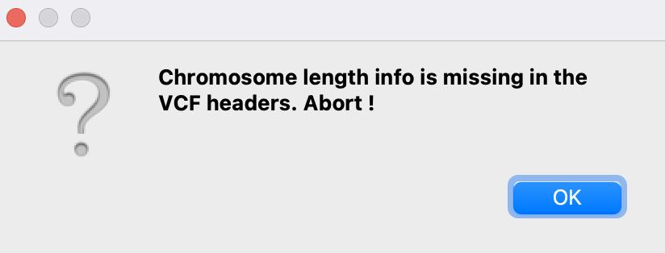
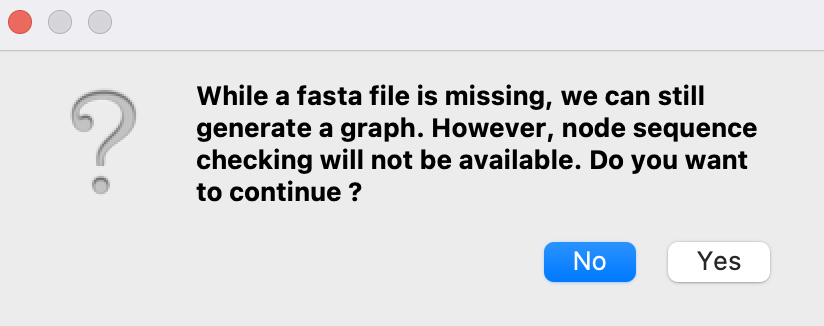
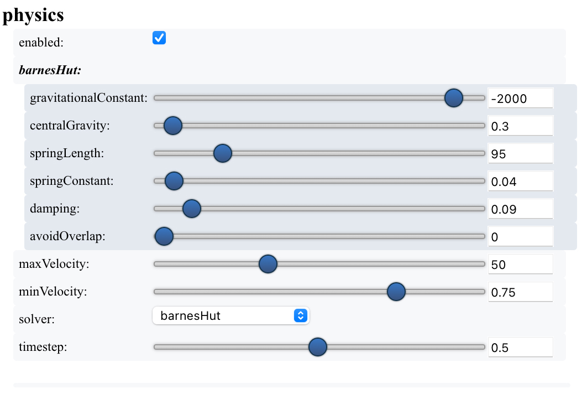
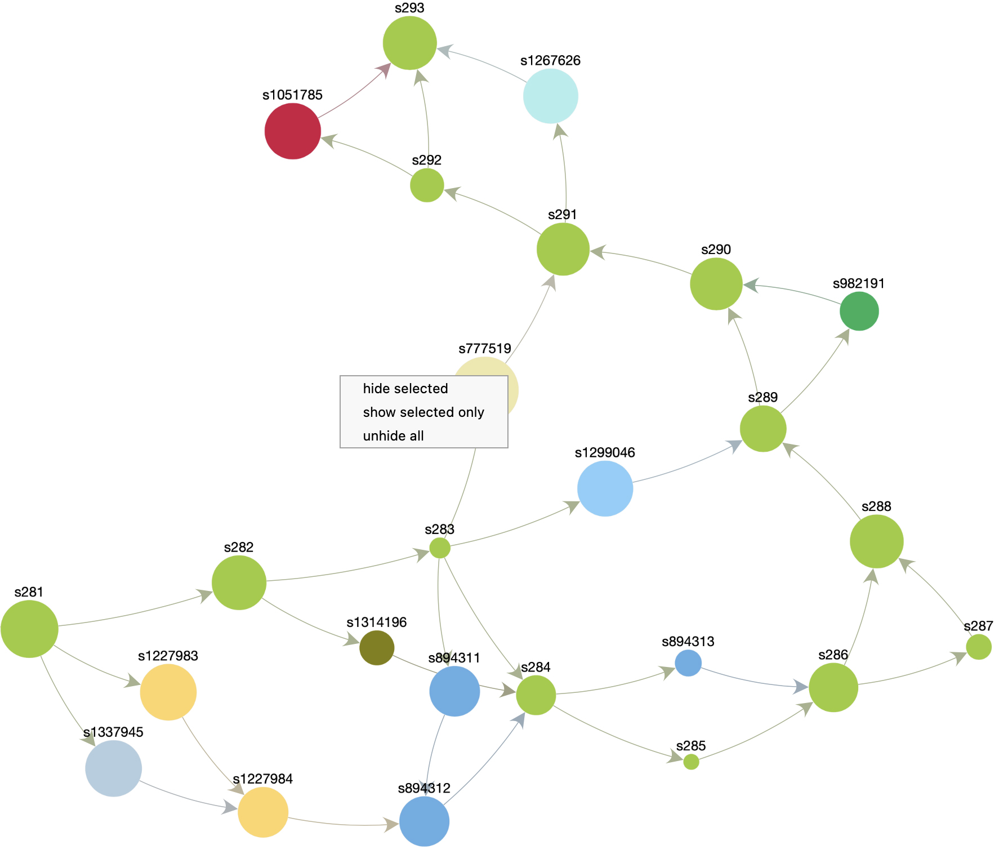
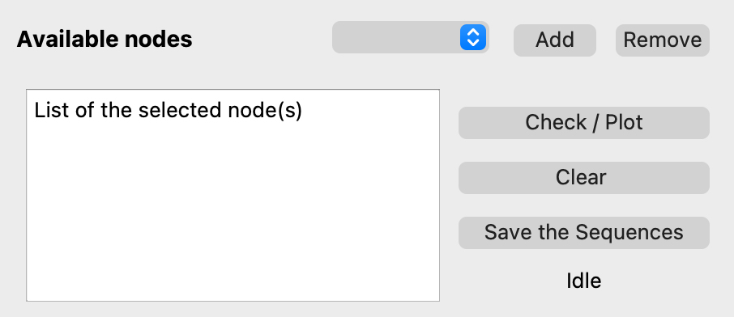
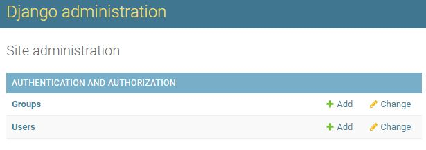

Manual for PanGraphViewer
Yuxuan Yuan, Ricky Ma and Ting-Fung Chan*
The Chinese University of Hong Kong, Hong Kong

Version 1.0.2
2022-09-01
Table of Contents
- Workflow for using PanGraphViewer
- How to use desktop-based PanGraphViewer
- How to use web browser-based PanGraphViewer
Workflow for using PanGraphViewer
Thank you for choosing PanGraphViewer. Hope you can find our tool is useful for your study. In this section, we will introduce a general workflow (see the figure below) that can be used to explore PanGraphViewer.

There are three key functions that we would like to emphasize.
- Plot a genome graph
- Check the sequence of nodes of interest
- Show gene models that may be interrupted by some sequences/nodes in some samples
Plot a genome graph
Depending on the purpose and preference, users can install either application on their platform.
-
Before starting the application, firstly, users need to prepare an
rGFAfile, aGFA_v1file or aVCFfile that can be directly imported into the application. An output directory is also needed when processing the analyses. -
After specifying a needed file and an output directory, users can start to parse the file and then the graph information underlying would be stored in the memory. Users can adjust their purpose to decide which chromosome/sequence or a segment of it can be displayed in the display canvas by specifying the
backbone,chromosome/sequencename,coordinatesor "nodeIDs".. -
Once the graph is displayed, users can use, for example, the
mouseto zoom in and out to explore the graph. Hover information will show in the canvas if users move themouseto the node.
Check the sequence of nodes of interest
If users find some nodes are of interest, they can check or save the sequence of the nodes.
-
Usually, users can check nodes that are in variant hotspot regions or nodes falling in the gene model regions which may interrupt the genes and change the functions in some samples.
-
The saved node sequences can also be imported to other tools such as
NCBI BLASTto check the functions.
Show gene models that may be interrupted by some sequences/nodes in some samples
If users have the annotation file for the backbone sample, they can check gene models that are interrupted by some sequences/nodes in some samples.
- This would be of particular interest to biologists to find out if some important gene models are interrupted by some insertions, deletions, duplications or inversions in some samples.
How to use desktop-based PanGraphViewer
For the desktop-based application, once it is opened as shown below, users can follow the following steps to explore the program.

Load Files for Graph Visualization
Here we provide two options to let users select if they want to explore a GFA-based graph or a VCF-based graph.
GFA
When selecting to plot a GFA-based graph, an rGFA file or a GFA_v1 file is needed. Users can click the Select button to specify the file and then select an output directory to perform the analyses.

VCF
When selecting to plot a VCF-based graph, a VCF file is needed.

Users can click the Select button to specify the VCF file. An output directory is also needed to perform the analyses. Here the Backbone name and Backbone fasta are optional if
- the VCF file is a standard one with sequence/contig header and length clearly documented and users do not have a
backbone fasta - users have a standard VCF file but have no interest in node sequences
The program will check automatically if the given VCF file is a standard one once a fasta file is not specified. If the VCF file selected is not qualified, an error message will pop up.

Otherwise, a warning message will show.

By default the Backbone name is backbone and the Threads to parse the VCF file is 4.
Once the files are selected and the output directory is specified, users can click the Start button to parse either the given GFA file or the VCF file. The program will run internally with 'Parsing... or Converting ...' showing in the Status bar. Once this is completed, 'Finished in xxx s!' will show.
Selection for Plot
After completing GFA or VCF parsing, users can go to the Selection for Plot panel to check genome graphs. Here we provide Basic settings and Sample(s) showing panels to let users customize their plots.
In the Basic settings panel, users can select a particular chromosome/sequence to display after specifying the name of the backbone sample.

For the start and end positions, users can specify both of them, one of them or none. For example,
- if users specify both
startandendpositions, the graph will be limited to the two positions within the selected chromosome/sequence. - if only
startposition is given, the program will display a graph between thestartposition and the end position of the selected chromosome/sequence. - if only
endposition is given, the program will display a graph between 1 to the givenendposition within the selected chromosome/sequence. - if both start and end positions are not given, the program will display the entire graph of the selected chromosome/sequence.
Additionally, the program will check if the given start and end positions are qualified automatically. If not, a warning message will pop up and the plot will not be generated.
For the Sample(s) showing panel, users can select to hide nodes from particular sample(s) if they have such a demand.

Genome Graph
After completing the settings above, users can either click the Plot button in the Plot the Graph panel to generate the graph or customise the Settings first and then plot graphs.
In Settings, users can select Node Shapes to specify node shapes in either vis.js-based plot or cytoscape.js-based plot from the dropdown menus.

Users can also select to use either vis.js or cytoscape.js to plot graphs by the number of nodes specified in the Graph Modification panel under Settings.

By default, if users want to check graphs with <=200 nodes, vis.js will be applied to generate graphs. Users can adjust this value (200) depending on their preference. However, if there are over five thousands of nodes that users want to browse in one graph, we don't recommend using vis.js as it may take a long time to load the graph file (an html file).
Depending on the screen/display size, users may also need to adjust the canvas height and width to make the graph fully show in the canvas if selecting vis.js-based plot. The hover box may run off the screen if the canvas height and width settings do not match with users' screen size.
Once all settings are ready, users can click the Plot button to generate the graphs. After the graph is shown in the display canvas, users can use the mouse to zoom in and out to check graph details. Users can also move the mouse close to a specific node to check the node information (mouseover, see the figure below).

From the hover box, users can capture the information, such as
- NodeID: the node identity
- Resource: the node belongs to which chromosome/sequence in which sample
- Len: the sequence length of the node
- Pos: the coordinate of the backbone node
- Info: if the graph is from a VCF file, it will show the type of variants and the occur position in the backbone sample.
SNPrepresents single nucleotide polymorphism,INSrepresents insertion,INVrepresents inversion,DUPrepresents duplication andTRANSrepresents translocation. - Seq: the first 10 nucleotides of the node sequence if it has
If users decide to use vis.js to plot graphs, we also provide some options in Settings to let users customize the plot if they don't like the default one.
- Graph Interaction: to enable/disable some functions when interacting with the graph

- Graph Modification: to customise the display of the graph, for instance the
graph layout,edge lengthand thedegree of node overlapping.

Users can customise the graph by enabling the options and the corresponding options would be shown in the display canvas during graph display.
While in cytoscape.js-based plot, we do not provide such functions or interactions mentioned in the vis.js-based plot. However, one unique interaction in cytoscape-based plot is that users can press Ctrl or command and hold the left click button of the mouse to select particular node regions and then right click the mouse to show or hide nodes (see the figure below). This would be useful if users want to check a specific subgraph.

Check node information
We provide two ways to check the node information.
-
One way is that users can move the
mouseto a specific node in the display canvas and then a hover box will show the information of the node.
-
Another way is that users can check the information of nodes from the
Available Nodespanel.
- In the dropdown menu, the first 20000 nodes in the entire graph will be listed. Users can select the node that they want to check or remove it from the selected list.
- Users can also type the node id in the
List of the selected node(s)panel by lines - Once clicking the
Check/Plotbutton, the program will pop out a diag box asking if users want to browse the sequences of selected nodes or the graph built by the selected nodes. Users can decide by click the corresponding button. - Users can also click the
Save the Sequencesbutton to save thefastafile to the output directory. Users can import the saved sequence file to other programs, such asNCBI-blastfor downstream analyses.
Please note that by default we only allow a sequence display with <=
1000000bp in length. The reason to do this is that if a large sequence is needed to display, it would take a long time to show. Users can change the setting inSettings-->Graph Modificationif they really want to display a large sequence.
Display gene models that may be interrupted in some samples
If users have an annotation file for the backbone sample, they can check gene models that may be interrupted by some sequences in some samples.

Basically, users need to
- specify the annotation file and then parse it. By default, gene models having at least
2nodes falling in the region can be retained. Users can change this setting inSettings-->Graph Modification. - once the parsing is completed, users can select a gene model from the dropdown menu to check nodes that fall in the selected gene region.
After clicking the Plot button, a plot will show in the display canvas.

- Users can enable the zoom in and out function by clicking the
Wheel Zoom(x-axis)button on the right top panel in the canvas. - In the canvas, users can get the selected gene model ID and the nodes falling in the gene region.
- Users can check the nodes through the
Available Nodespanel or plotsubgraphsusing the coordinate of the gene model.
How to use web browser-based PanGraphViewer
After the installation of the web-based PanGraphViewer, users can follow README to open it. The login interface is like:

Users can use the test account (demo) or personal account to open the application.
After opening the page showing above, users can
- follow similar approaches used in the
desktop-basedversion, users canuploadandparsea GFA file, anrGFAfile or aVCFfile to the system - plot pangenome graph/subgraph from the
Plot pangenomepanel - explore the node information from the
Extract nodespanel - check gene models that may be interrupted by some sequences in some samples

Notably, when selecting specific nodes in the graph, the web-based application provides options to directly check/download the node sequence(s).

For the admin account, users can login using the steps shown in the README file. The interface of the login page is like:

Once entering the login page, the admin can create accounts for either groups or users.

Enjoy using PanGraphViewer!